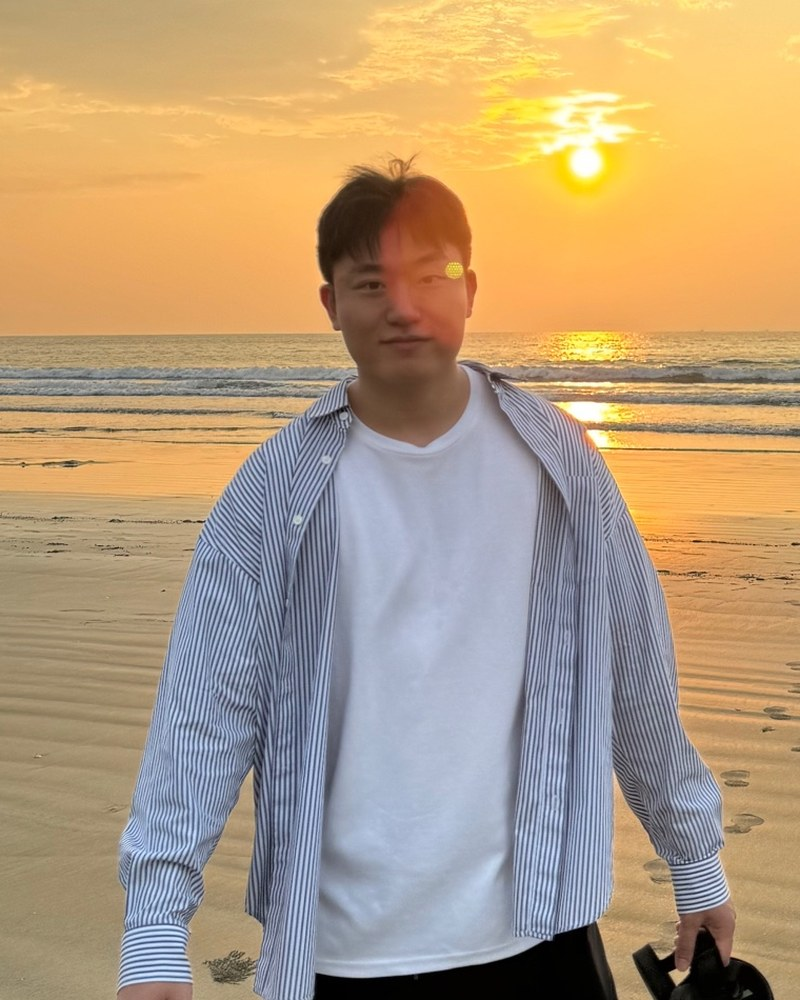
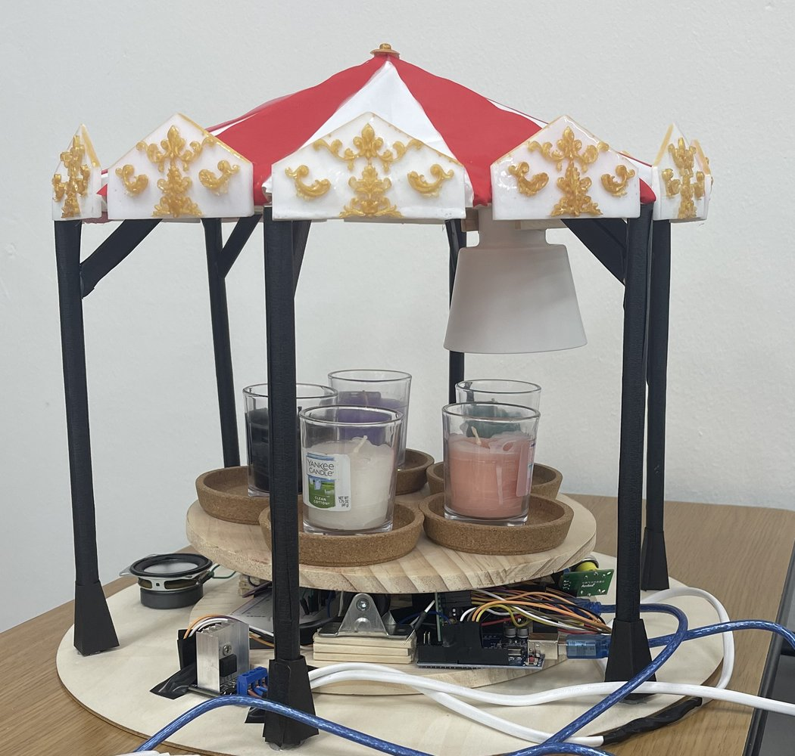
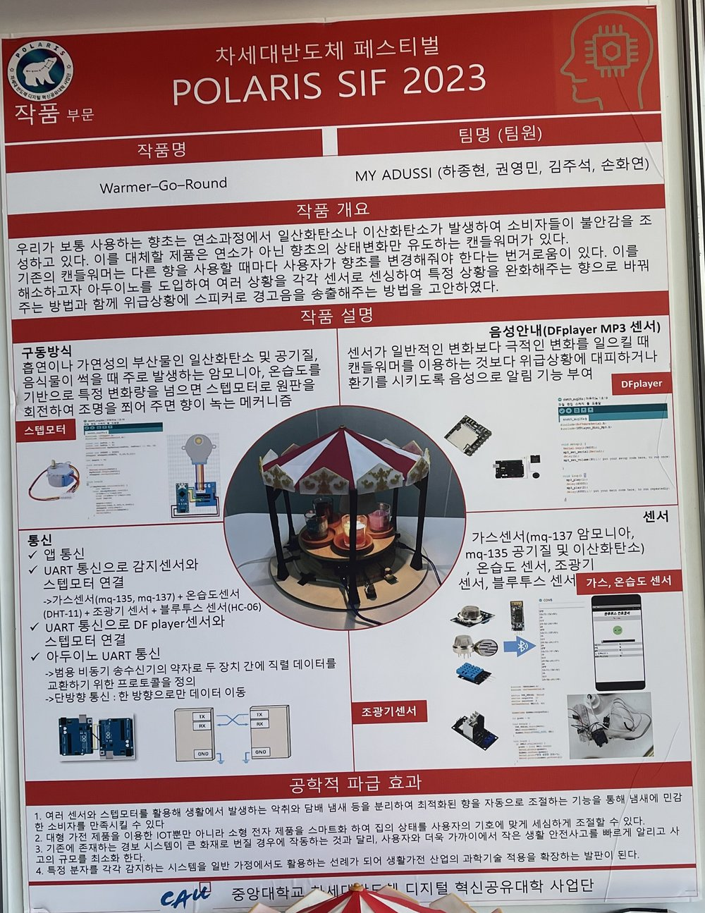
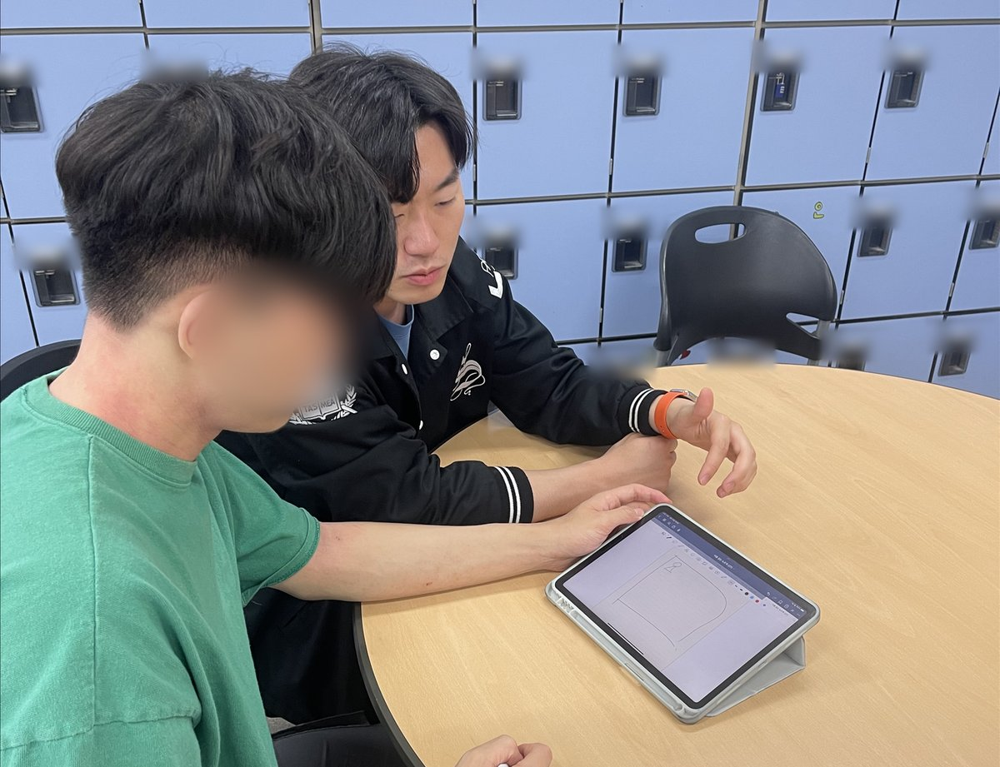
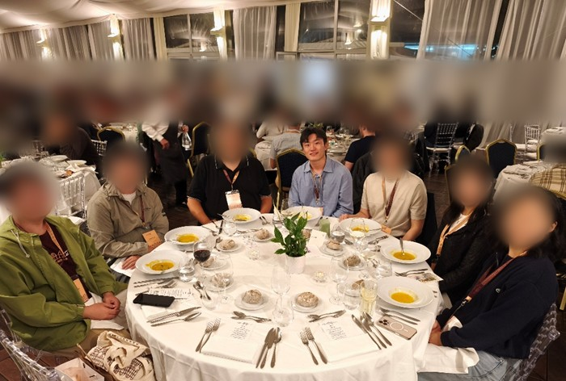
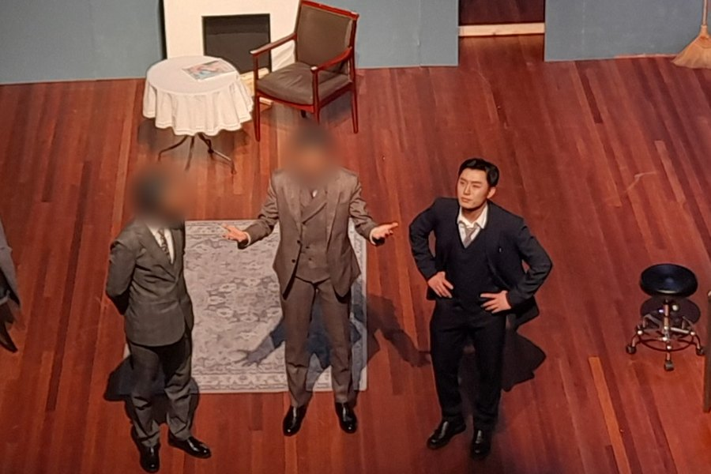
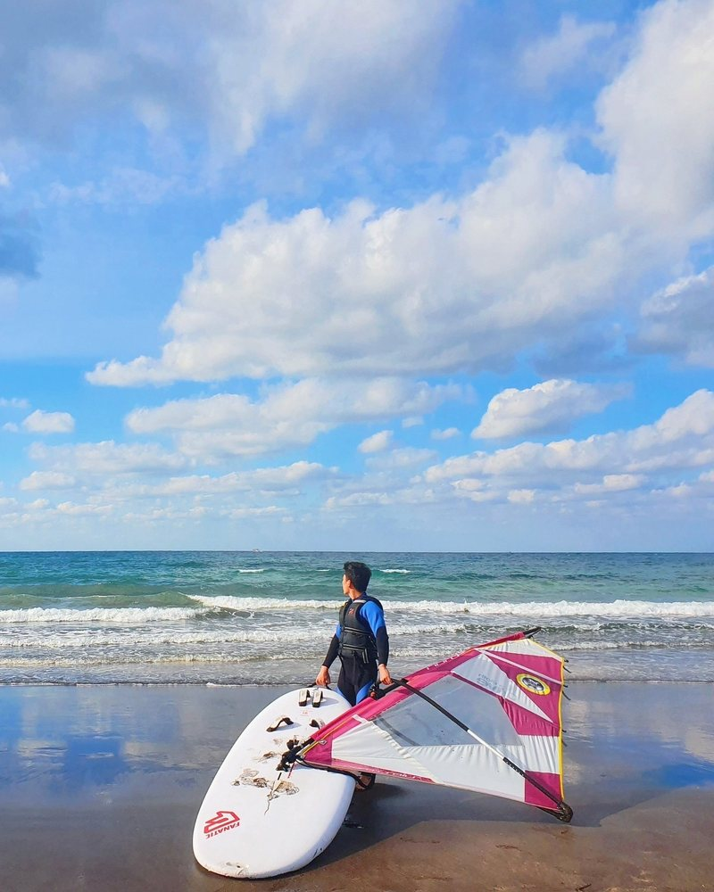
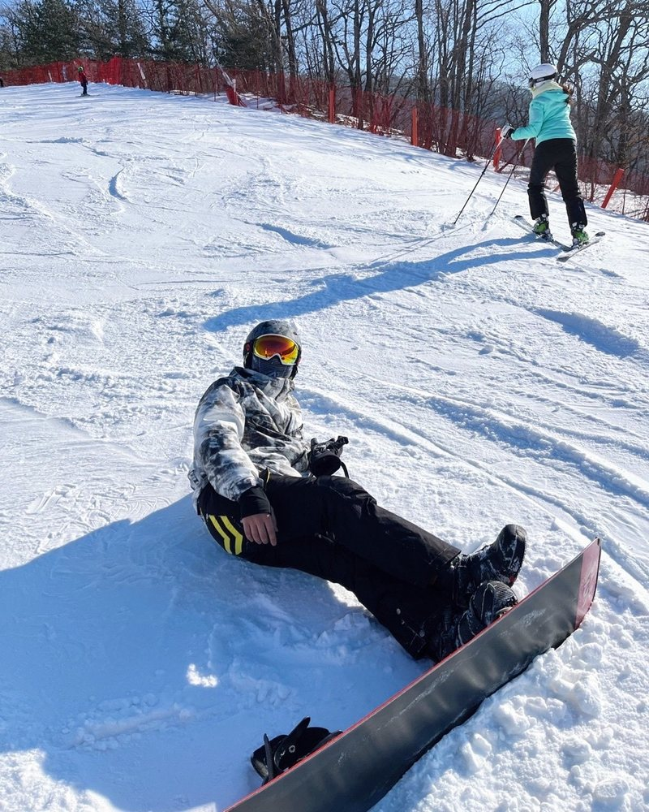
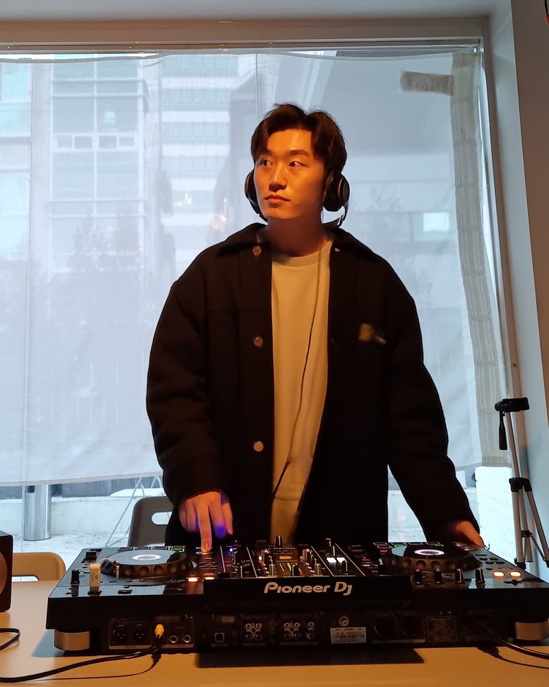
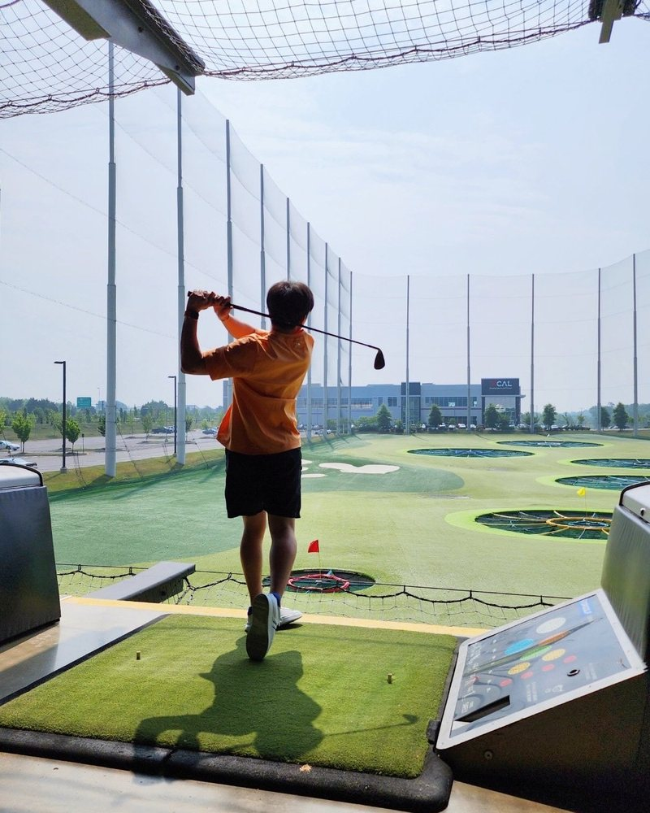

Deadline-aware transport
Transport and scheduling for synchronized sources that contend for a shared link, aware of which data belong together and when each piece stops being useful.
I build real-time networked systems for human and machine perception.
Second-year M.S. student in Electrical and Computer Engineering at Seoul National University.

I am a second-year M.S. student in NXC Lab at Seoul National University, advised by Prof. Kyunghan Lee.
Before my master’s, I earned a B.S. at Seoul National University with a double major in Rural Systems Engineering and Electrical and Computer Engineering.
My research interests lie in real-time networked systems for both human and machine perception in resource-constrained environments. Network streams are increasingly received by AI models and autonomous systems, whose real-time visual data needs differ from those of human viewers.
My master’s research is on live volumetric streaming, where I designed FugaStream, a system that pipelines 3D reconstruction across delayed camera views. I also collaborate with Prof. Carlee Joe-Wong’s group at Carnegie Mellon University on measuring how much video data contributes to training vision models.
Streams for people,
models, and robots.
Transport and scheduling for synchronized sources that contend for a shared link, aware of which data belong together and when each piece stops being useful.
Streaming for AI models and robots, where quality means task accuracy and the system delivers first what the task needs.
Deciding jointly what to transmit and where to process it, with neural codecs and models split across device, edge, and cloud under one latency budget.
FugaStream: Pipelined Live Volumetric Streaming towards Full Exploitation of Multi-views
Edward Jusuk Kim, Huijeong Choe, Minjae Lee, Chanjeong Park, Kyunghan Lee
arXiv preprint, 2026.
Graduate Student Researcher · Metaverse Team
Built an eight-camera RGB-D end-to-end testbed from capture to rendering (WebRTC, CUDA-based fusion, UDP transport, and rendering on an NVIDIA Jetson) to study latency–quality trade-offs in live volumetric streaming under dynamic network and processing conditions. Led a four-student team as first author of FugaStream and wrote the full paper, now posted on arXiv.
Research Collaborator · Prof. Carlee Joe-Wong
Developing, as part of a joint CMU–SNU team, a testbench that measures how much video data contributes to training vision models. Set up SAM 3 for text-prompted segmentation and video object tracking to pseudo-label datasets without ground truth, and a DINOv3 feature-extraction and linear-probing pipeline with kNN, linear, and MLP heads.
Undergraduate Research Intern · Network and Metaverse Team
Reviewed recent research on real-time communication systems and neural codecs. Designed, trained, and analyzed a VQ-GAN-based tokenizer and a ViViT-based frame reconstruction model for error recovery in real-time video conferencing.
Undergraduate Research Intern
Analyzed indoor conditions in piglet houses in relation to structural design and ventilation. Assisted with experiments on plant-leaf sensors and rooftop greenhouse ventilation.
Implementation, experimentation,
and performance.
Machine Learning for Visual Understanding · Prof. Joonseok Lee · SNU
Proposed and led a three-person project on reducing the per-frame update cost of 3D Gaussian Splatting (3DGS) for free-viewpoint video. Designed and implemented a training-free method that reuses video codec motion vectors to update Gaussians, enabling live 3DGS streaming at some cost in fine detail. The proposal was among the top third selected as team projects.
GPU programming · Second place
Increased VAE throughput by approximately 1,200× over the original CPU implementation using CUDA kernels, shared memory, layer fusion, and asynchronous memory copies.
Embedded systems · CTO · Program Director’s Award
Collaborated with a team of engineers to design, build, and program an adaptive candle warmer that adjusts its operation based on inputs from multiple sensors. Implemented UART communication on Arduino for data exchange and control, and developed a Bluetooth companion application.


POLARIS SIF 2023 · Exhibition poster
Overview. Scented candles release carbon monoxide and carbon dioxide when burned. A candle warmer only melts the wax, but scents must be swapped by hand. Ours senses the room with an Arduino, switches to a fitting scent, and gives a spoken warning in an emergency.
Mechanism. When gas, air-quality, or temperature and humidity readings cross a threshold, a stepper motor rotates the disc so the lamp melts the matching candle.
Parts. MQ-137 and MQ-135 gas sensors, DHT-11, a light sensor, and HC-06 Bluetooth, linked over UART to the motor, a DFPlayer voice module, and a phone app.
Mar 2025 – Present
M.S. in Electrical and Computer Engineering
Advisor: Prof. Kyunghan Lee · GPA: 4.25/4.30
Mar 2018 – Feb 2025
B.S. in Rural Systems Engineering and Electrical and Computer Engineering
Machine Learning and Linear Algebra, Data Communication Networks, Understanding of Advanced Cellular Systems, Computer Organization, Signals and Systems, Data Structures
Fall 2026
Seoul National University · Prof. Kyunghan Lee
Implemented a reference HTTP server in C for a socket-programming assignment, supporting concurrent requests, video streaming, and cookie-based session management. Built a QUIC-style video streaming course project on loss recovery with FEC and interleaving.
Mar – Dec 2023
College of Agriculture and Life Sciences, Seoul National University
Mar – Jun 2023
Department of Physics and Astronomy, Seoul National University

Accelerator Programming Summer School
37th Excellent Report Contest, Seoul National University
POLARIS SIF · Warmer-Go-Round
Seoul National University · Spring and Fall 2019, Fall 2022, and Spring 2023 (full scholarship)
College of Agriculture and Life Sciences, Seoul National University
KICS Winter Conference
62nd National Science Fair, Republic of Korea
Mentoring program participant

Seoul National University
Performed in two stage productions

Squad Leader
Wind, snow, music,
and golf.




For research discussions and collaboration, please reach out by email.